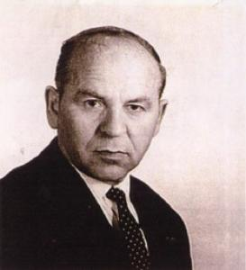

 Gheorghe I. Ionescu s-a născut la Plopeni, județul Constanța, România, în 17 aprilie 1912, și a răposat întru Domnul în 8 decembrie 2002 la Huntington Beach, California, SUA.
A petrecut copilăria la Obilești, județul Râmnicu Sărat, a urmat studii la Focșani și a terminat școala Normală la Cernăuți, Bucovina, în 1933. În aprilie 1936, în urma unei Convenții între România și Iugoslavia, a venit la Alibunar ca învățător misionar pentru românii din Banatul Iugoslav.
Între 1936 și 1954 a fost profesor și învățător la Alibunar (Barite) și Uzdin, unde a pregătit multe generații de elevi. A fost ultimul din generația de institutori veniți din România - și odată cu moartea lui s-a încheiat un capitol din istoria învățământului românesc din Banatul Iugoslav.
În 1942 s-a căsătorit cu Maria Borlovanu, originară din Alibunar, Banat. A urmat studii superioare la Novi Sad, Pepperdine University (Los Angeles, California) și Universitatea din Valencia, Spania.
În 1954, împreună cu soția și cei doi feciori a trecut la Trieste, Italia și în 1958 a emigrat în Statele Unite, stabilindu-se în California. Prin multă străduință și-a instruit cum se cuvine cei doi copii: Lavinel, chimist de renume mondial, profesor universitar în Brazilia, editor al revistei internaționale Southern Brazilian Journal of Chemistry și Florin, doctor în Chimia Farmaceutică, doctor în Stomatologie și dentist în San Antonio, Texas, SUA.
Odată pensionat, a călătorit mult în Europa, Canada, Statele Unite, Mexic și multe țări din America de Sud.
A fost membru al Academiei Româno-Americane de științe și Arte (ARA - American românian Academy of Arts and Sciences), a scris multe articole în ziare din România, Iugoslavia și Statele Unite și a publicat mai multe cărți. Printre ele, cităm: "Doina, Manual de gramatică și compoziție pentru școlile minoritare românești," Ed. Napredak, Vârșeț, Iugoslavia, 1939; "Buvar za I Razred Osnovne Škole," Trieste, Italia, 1956; "Limba Noastră - Carte de citire pentru puișorii români din diasporă," Trieste, 1957; "Istroromânii de astăzi - Un studiu etnografic," Trieste, 1958 și "Familii din care mă trag," Ed. Sarmisegetuza Rediviva, Huntington Beach, California, 1987. Între 1955 și 1956 a tradus mai multe cărți, printre care "America - What Can Be More Sublime" de Heiner Gautschy, "Brazilia" de Stefan Zweig și "Australia" de Paul McGuire.
Prin amabilitatea fiului său, domnul Lavinel G. Ionescu din Brazilia, am intrat în posesia unei lucrări de un interes deosebit: "Librici za lu Rumeri din Istrie". Adică, pe limba noastră de azi, "Carte despre românii din Istria". În fapt, despre acea populație latinofonă din Istria, de la granița dintre Croația și Italia. O populație despre care ignoranța concetățenilor noștri de azi este cvasitotală - iar acest fapt nu e de mirare dacă ne gândim că nici despre vlahii din zona bulgăreasca a Vidinului, aici la doi pași, nu se știu prea multe lucruri. Socotim că pentru concetățenii noștri interesați de problematica românească fie și numai fragmentul care urmează poate constitui o lectură emoționantă.
"Un grup de români apuseni ocupa odinioară regiunile dintre Trieste și Fiume și dintre Pola și Fiume. Cea din urmă se numește și astăzi Vlăsia, mai ales partea dintre Pisino și Pola. Ei își zic vlași; străinii le zic vlasi, dar mai ales ciribiri. Ciribiri au fost porecliți, probabil, de alți români cu care au fost în contact, numai prin faptul ca ei pronunța "cire și bire" în loc de "cine și bine". Porecla a fost împrumutată apoi de popoarele conlocuitoare. Irineu della Croce, istoric triestin, a spus ca ei se cheamă rumeri (=rumeni), denumire moștenită și de A. Glavina, redeșteptătorul conștiinței lor naționale. Istoria literaturii române și marele savant Sextil Pușcariu, care i-a studiat mai mult ca toți (dar care n-a avut putința să-i vadă la ei acasă), îi numesc: istroromâni. Cei ce mai supraviețuiesc astăzi își zic: "vlași," "rumuni," chiar și "istrorumuni" - iar limba și-o denumesc "vlașchi," "rumunschi," "po nașu".
Unii dintre istroromâni, vlași sau cici au sosit pe calea migrațiunilor individuale ca păstori, sau chemați de principii austrieci ori dogii Veneției pentru a popula pământurile rămase goale în urma unei ciume ce bântuia între 1400-1600. Cei mai mulți, însă, vor fi o prelungire mai înceată a celorlalți români, căci în 1329 se întâlnește în Pinguente, vlahul Pasculus (Pascu). Într-un zapis din 1463 cicii sunt arătați ca morlacchi sau morlacci ai lui Giovani Frangiapanu, căzuți într-o luptă lângă Pisino. Au fost românești satele: Katun, Rumkovac, Kerbune, Vlahi, Pikulici, Perici, Paracici, Schitazza, Vlahovo, Vlaška, Vlahova, Lizzul, Bolohani, Faraguna, Faraguni, StaraGuna, Vlašici, Cobai, Cubani, Cubani, Cubanici, Floricici, ("floricica"), Jerbulisce (ierbuliste), Jerban (ierban), Sugari, Dosan (dos), Surani (sur), Guran (gura), Serman (sarman), Pulici (de la pului= puiu), Petek (petec), Vidulini, Vlachovichievo-Selo, Valobreg, Cari ("caini"), Kukulj, Kukuljani, Buri ("buni"), muntele Gura, Cattinare ("cătunar") lângă Trieste, apoi Opicina, Gropada, Voidca, Lanisce ("laniste) s.a. În "Historia antica e moderna, sacra e profana" (Veneția, 1698, pag. 334) istoriograful G. Mario Manarutta, zis și Ireneo della Croce, spune "ca populația din Opicina, Tribichiano și Gropada foloseste o limbă particulară și proprie, asemănătoare cu româna, presărată cu diverse cuvinte și verbe latine, iar cicii noștri se cheamă în limba proprie rumeri".
T. Burada auzise de la A. Covaz ca au fost familii românești și în Pola, Albona, Fianova, Volosca, Pinguente, Pisino, Gallignama, Corte Alba, Ladino și Castua; iar de la Antonio Boltranini, că se vorbea românește în Cătun, Kerbune, Cosliaco, Rachita, Cepici Bolesco, Chersano, Lizul, Barbana și Carnizza. Kandler în "Dei popoli che abitavano l'Istria" amintește că se vorbea românește (1851) și în Tepenovizza, Cepici, Chersano, Cosliaco (S.P.op.cit.). Biondelli în "Studii Linguistici" Milano, 1856, spune: "Locuitorii micuțului sat Cepici, compus din 320 păstori, vorbesc un dialect ce se aseamănă cu cel românesc de la Timișoara. Cei 1130 locuitori din Valle sunt numiți "latini" de slavii înconjurători, iar cei 4.080 locuitori din Dignano (Vodijan) sunt o relicvă a unei colonii valahe".
În Cepici și Kerbune se mai vorbea "vlașchi" în 1893, spune și St. Nanu în "O excursie la românii din Istria".
Ion Maiorescu spune că în St. Martin, din cauza căsătoriilor mixte, numai în 4-5 case se mai vorbea românește.
Satul Posert (Posrt) era considerat istroromân de Miklosich, și e socotit românesc în raportul Comisiei pentru înființarea școlii din Sușnievița în 1888. La 1890 Burada, iar în 1892 Weigand găsesc români în Schitazza, iar Maiorescu constată că poalele muntelui dinspre miazăzi se numește "Valea Curată," dar îi aude vorbind românește numai pe bătrânii de la 40 de ani în sus. În 1892 A. Glavina pomenește de slavizarea celor 250 suflete din Schitazza și ca aceeași soartă au avut-o și rumerii din Santa Lucia. "Locuitorii din Dare, Senjane (azi Jeiăni) și Villanova sunt adevărați vlahi și vorbesc unul cu altul limba valahă, cu deosebire că în limba lor s-au furișat multe cuvinte slave" (spune G.F. Scheiner în Allgemeine Enzyklopadie, Leipzig, 1846). Satele istroromâne Grobnico (Grobnic) și Gradigne (Grădinje), studiate de filologul italian M. Bartoli între 1900-1908 și pomenite de profesorul Sextil Pușcariu în "Studii Istroromâne" vol. III, pag. 95, în luna octombrie 1958, erau complet slavizate și nimeni în aceste sate nu mai pronunța o boabă românește - dar locuitorii, cei bătrâni, nu neagă originea lor română.
Într-o notiță a ziarului "Borba" ce apărea la Belgrad (16 aprilie 1958) se vorbește de "românii din Istria," a căror limbă se aseamănă tare mult cu a românilor din Macedonia și Dacia.
Mai numeroși sunt în satele Posert, Gradijne, Letaj, Grobnik, Sușnievița, Bârdo, Novo Vas și Jasenovita, apoi în satul Jeiăni și platoul Ciciarie. În Istria se găsesc de asemenea rămășițe ale vechilor români în satele Vodnjan, Bale, Rovinj... românii au apărut în Istria în sec. XV. De la vatra de baștină, românii istrieni au plecat spre Apus împinși de turci, trecând prin Serbia, Bosnia, Lika și Croația, așezându-se apoi la poalele de apus ale muntelui Učka".
într-altă notiță publicată de ziarul "Politika" nr. 16226 - 27 iunie 1958, Belgrad - sub rubrica "Da li znate? (știți că...), se spune: "În câteva orașele din Istria sudică și nordică, ca de ex. în Vodnjan, Vilsnjan și Bale, trăiește o populație veche care a rămas din timpurile Romei (istroromâni). Limba acestei populațiuni se deosebește de italiana populară și literară și de dialectul venețian. Grai român (românski govor) de asemenea natură exista în secolul al XIX-lea și în orașul Veglia (Krk), când a încetat odată cu ultimul om ce-l vorbea. Această limbă își are o dezvoltare specifică, datorită condițiunilor geografice, fără contact cu marile teritorii latine, italiene la vest sau românești la est".
Părerile respectivelor publicații, inspirate din vreo enciclopedie și nu de situația de pe teren, nu corespund total realității, căci, dacă românii apar în documentele sec. XII-XV, pe teren erau desigur mai înainte cu mult. În satele: Poset (Posrt), Gradinje și Grobnik, valahe odinioară, azi nu se mai vorbește românește, iar în satele de origine valaha: Vale (Bale), Dignano (Vodnjan), Vianjan (Visignano), Rovine (Rovigne - Rovinj) slab se mai simte istroromânește în urma celui de-al doilea Război Mondial. Dar chestiunea, odată pusă, ar trebui mai bine cercetată, pentru a se ști cu precizie câte suflete de acolo mai păstrează limba strămoșilor lor de origine latină, fiindcă chiar părerile localnicilor sunt adesea contradictorii.
De exemplu, Lancia Eufemia, născută și trăită în Rovine, de 21 ani, spune: "Rovine are circa 5.000 locuitori, care vorbesc hrvatschi, bătrânii cuvântă și italianschi și un dialect vechi, istrianschi. De ciribirischi (rumunschi) n-am auzit, de altfel multă populație băștinașă s-a refugiat în Italia, iar în locul ei au fost aduși coloniști".
Vor rămâne numai urmele de acești bieți români, fără nici o ocrotire, cum s-a petrecut în multe alte părți".
PS. În cartea sa de amintiri, domnul Tiberiu Cunia, din Statele Unite ale Americii (om de știință, universitar de origine aromână), povestește cum, evadând prin anii '50, împreună cu alți români din țară, din lagărele iugoslave, a întâlnit în drumul lor spre Occident, aproape de granița cu Italia, oameni care vorbeau o limbă ce seamănă în mod ciudat cu româna. Dintre toți ceilalți, numai el, aromânul, a intuit că aceia trebuiau să fie celebrii, dar... necunoscuții istro-români!
Ilie Traian
September 16, 2006
© 2006 Curierul Național